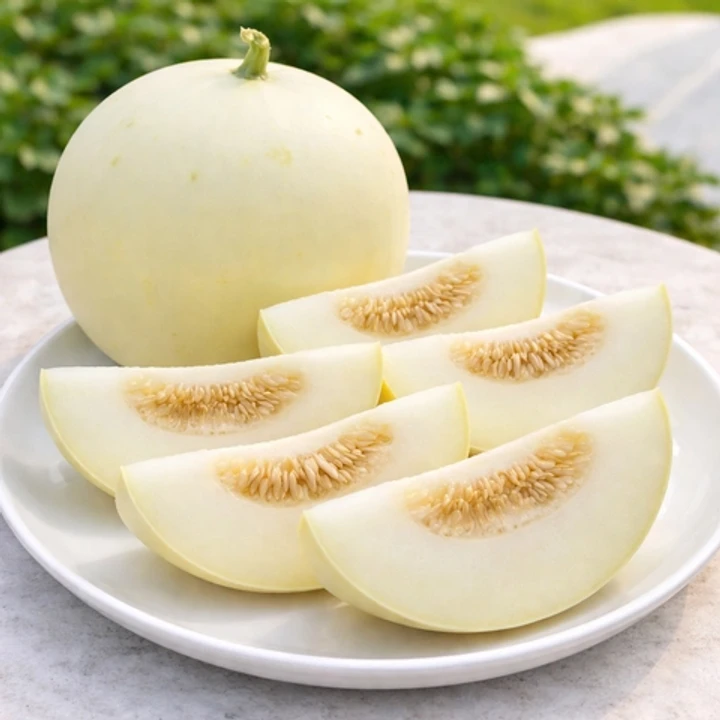

왜 이 페이지를 만들었을까?
요즘 장 볼 때 과일코너에서 이색적인 과일들이
자주 보여 흥미로웠습니다.
그래서 하나씩 사서 먹어보는데
요즘은 멜론을 다른 종류로 하나씩 먹어보고 있어요.
그래서 간단한 소개와 후기를 블로그 느낌의 페이지로
만들어보게 되었습니다.
🍈 백자멜론

간단 소개
흰색 바탕에 녹색 호피 무늬가 그려진 외형이 가야시대 도자기인 백자와 유사하다고 해
백자멜론이란 이름이 붙었습니다.
특징은 다른 멜론보다 과육이 부드럽고 아삭아삭한 데다 고당도에 특유의 상큼한 향이 난다는 점이에요.
또 과육부가 두껍지만 껍질은 얇고 과일 속부터 껍질부위까지 당도가 일정하며
15~17브릭스의 고당도라고 합니다.
먹어본 후기
저는 집 앞 동네 마트에서 처음 봤습니다.
요즘은 동네 마트에서도 특이한 과일들을 접할 수 있어요.
후숙이 잘 된 것으로 골라 당일 바로 먹어봤는데
설탕이 아닐까 싶을 정도로 정말 달았습니다.
식감도 매우 부드럽고 과즙도 풍부해서
제가 생각하는 이상적인 멜론이었어요.
🍈 캔털루프 멜론

간단 소개
이탈리아의 로마 근처 교황청이 있는 캔털루프라는 마을에서 활발하게 재배되어 붙여진 이름이라고 해요.
백녹색 네트에 주황색 과육을 가진 품종으로 일반 머스크 멜론보다 더욱 달고 향이 진하다고 합니다.
먹어본 후기
신세계백화점 과일 코너에서 조각 과일로 판매하던 것을 구매했어요.
색이 주황빛이라 뭔가 특이한 느낌에 기대를 많이 했지만
후숙이 제대로 되지 않았는지 식감은 아삭했고,
맛도 덜 후숙 된 멜론 특유의 맛(like 참외)이 강하게 느껴졌습니다.
백화점 과일은 맛보다 외형을 더 중요하게 생각하는 건 아닐까
하는 생각도 들었습니다.
🍈 하미과 멜론

간단 소개
청나라 때 하미국의 왕이 청나라 황제에게 이 멜론을 바치자
황제가 그 맛에 반해 이 멜론의 이름을 하미과 멜론이라고 붙였다고 해요.
캔털루프처럼 속이 오렌지빛이며 수박과 참외의 중간처럼 사각거리는 아삭한 식감과
최대 15브릭스 이상의 매우 진한 단맛을 자랑합니다
후숙 중

이 사진은 저번주 일요일에 롯데마트에서 구매한 하미과 멜론입니다.
보통 2~3일 있으면 배꼽 부분이 말랑해지면서 후숙 진행을 확인할 수 있는데
아직 딱딱해서 집에서 후숙 중입니다.
금요일에 손질해서 먹어볼 예정이에요.